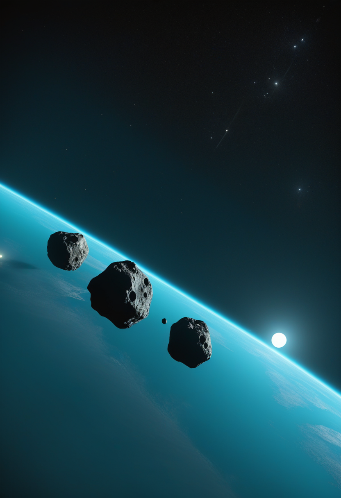
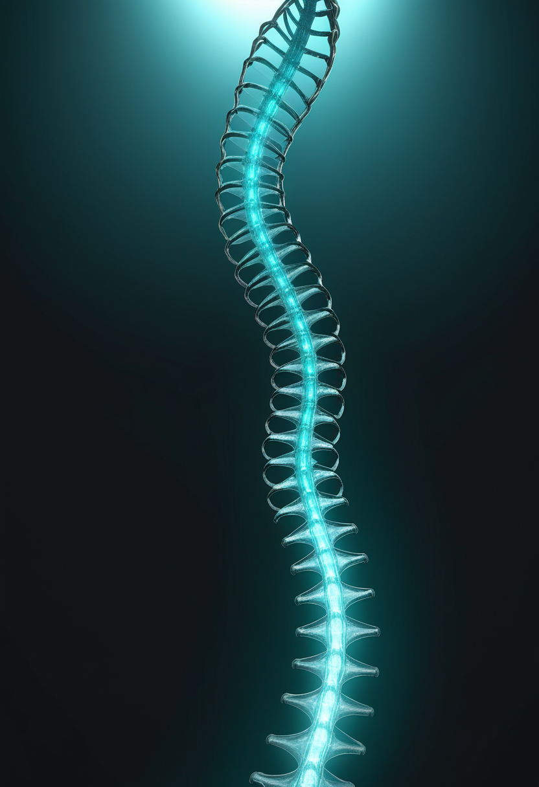
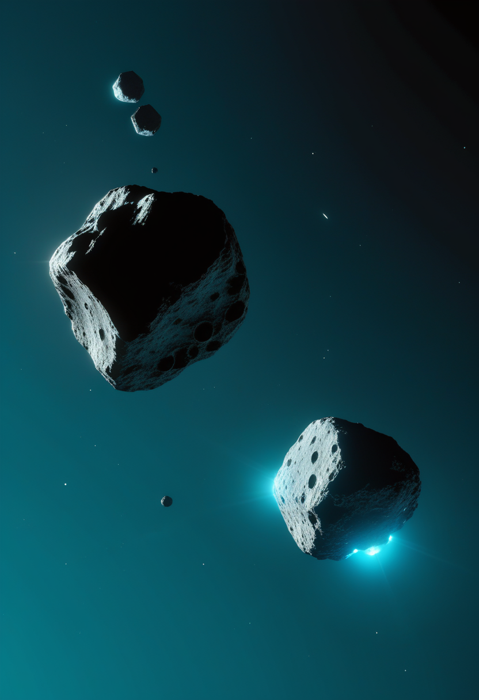

ESAの探査機Heraが衝突現場の小惑星に約60kmまで接近し、DARTが見なかった側面を初めて捉えた。流行地では英国人医師が初めて本国へ医療搬送され、深センの超音波治療で意識障害の患者13人に改善が見られた。
欧州宇宙機関(ESA)の探査機Heraが11/5、衝突実験の現場である小惑星ディディモス・ディモルフォス系に大きく接近し、新しい画像を公開した。撮影地点はディモルフォスから約37マイル(約60km)で、画面の大部分を親天体ディディモスが占め、その下に衛星ディモルフォスがわずかに写っている。注目すべきは、NASAの探査機DARTが2022年の衝突直前に見ていなかったディディモスの側面を、Heraが初めて捉えたこと。10/18の『ファーストライト』画像(距離約1,280km)から1か月弱で、観測距離は270〜360kmを経て約60kmまで縮まった。ESAのイアン・カルネッリ氏は、Heraが近づくにつれて画像はさらに鮮明になり、ディモルフォスの最初の詳細画像は11/25に公開される予定だと説明している。衝突でディモルフォスの軌道と自転がどう変わったかを確かめる『検死』が、着実に次の段階へ進んでいる。
Scholar Rockは11/10、2026年第3四半期(9月末まで)の決算を発表した。9/11に米国で承認された抗体薬ISEMBYLD(一般名apitegromab、筋肉を狙うSMA治療薬。本誌は前号までapitegromabを「ISEMBLYD」と表記していたが、会社発表の正式表記は「ISEMBYLD」)の売上は約57万〜60万ドル(資料により数字に幅がある)で、専門薬局網への初回出荷分にとどまり、アナリスト予想の約143万ドルを下回った。純損失は1億720万ドル(前年同期は1億220万ドル)、1株当たり損失は0.81ドルで、こちらはアナリスト予想(0.84ドルの損失)より小さかった。9月末時点の現金・有価証券などの残高は4億1,360万ドル。優先審査バウチャー(PRV)を2億500万ドルで売却する契約も結んだが、買い手の社名は今回確認した資料には記載がない(未確認)。欧州では販売承認申請(MAA)が10月に再提出・受理され、欧州医薬品委員会(CHMP)の意見は2027年前半の見込み。発売直後で売上はまだ在庫の出荷段階にあり、保険の承認が進む次の四半期が本当の試金石になる。
ISEMBYLDは承認から2か月、出だしの売上は在庫の出荷段階にとどまり市場予想を下回った。欧州の判断は2027年前半の見込みで、次の四半期の保険承認の進み方が本当の試金石になる。
11/2、粤港澳大湾区国際脳機接口産業創新大会(深セン)で、中国科学院深セン先進技術研究院などのチームが、頭を切らない超音波BCIの臨床成果を発表した。MRIで脳内の標的部位を特定し、超音波をミリメートル単位で集中させる仕組みで、てんかんやうつ病への応用研究も進めている。昆明医科大学との初期臨床研究では、脳出血や外傷などで生じた遷延性意識障害(いわゆる植物状態)の患者24人に、週3回・1回20分・4週間の超音波治療を行い、13人に意識や行動の明確な改善が見られた。脳出血で3か月間昏睡状態だった1人は、30日間の治療後に覚醒し、会話や自力での食事ができるようになり、介助があれば歩行もできるようになったという。24人中13人という数字は初期の臨床研究にとどまり、無作為化対照試験のような厳密な検証はまだない。

脊髄刺激で麻痺の回復をめざすONWARD Medicalは11/3、2026年第3四半期の業績を発表した。売上は250万ユーロ(前年同期から2倍超に成長)、うち主力製品ARC-EXの販売・供給分は200万ユーロ。ARC-EXは四半期に88台を臨床・在宅向けに供給し、台数は前年同期の2倍超(一部報道では120%増)、供給先の過半数は在宅使用向けだった。世界170以上の施設(米国の150のリハビリ施設・退役軍人病院を含む)で利用されている。資金面では、BlackRockが運用するファンドなどから最大5,000万ユーロの融資枠を確保した。脳とARC-EXを結ぶBCI『ARC-BCI』を組み込んだ重症例向けのEmpower BP試験は、参加者31人・拠点16か所(米国・カナダ・ドイツ)まで拡大している(上半期時点は22人・14拠点)。
中国では非侵襲の超音波が意識障害という難治の領域に数字を伴って踏み込み、欧州ではARC-EXの供給が倍増して在宅利用が主流になってきた。埋め込み型の派手な発表に比べ、着実な臨床と商業の積み上げが目立つ一週間だった。
コンゴ民主共和国(DRC)で人道支援にあたっていた英国人の男性医師がエボラに感染し、11/5(木)、英国とDRC両政府および国際的な保健パートナーの手配により、ロンドンのロイヤル・フリー病院の高度隔離病棟へ医療搬送された。今回の流行で英国人が本国へ搬送されるのは初めてで、ロンドン大学衛生熱帯医学大学院(LSHTM)の専門家は『英国の一般の人へのリスクは低い』としている。原因株はブンディブギョ型ウイルス。流行全体の規模は、WHOが11/6に正式公表した11/3時点の集計(確定10,668例・死者5,198人・回復者2,881人、致死率約48.7%)から更新がなく、この数字自体は11/10号で既報。新しい動きは、対応にあたる医療従事者自身の感染と、国境を越えた搬送という段階に入ったことだ。
エボラはDRC国内の対応に加え、国境を越えた医療搬送という新しい段階に入った。流行そのものの規模はWHOの11/3集計から更新がなく、次の焦点は搬送された医師の経過と、国際的な支援体制の広がり。

欧州宇宙機関(ESA)の探査機Heraが11/5、衝突実験の現場である小惑星ディディモス・ディモルフォス系に大きく接近し、新しい画像を公開した。撮影地点はディモルフォスから約37マイル(約60km)で、画面の大部分を親天体ディディモスが占め、その下に衛星ディモルフォスがわずかに写っている。注目すべきは、NASAの探査機DARTが2022年の衝突直前に見ていなかったディディモスの側面を、Heraが初めて捉えたこと。10/18の『ファーストライト』画像(距離約1,280km)から1か月弱で、観測距離は270〜360kmを経て約60kmまで縮まった。ESAのイアン・カルネッリ氏は、Heraが近づくにつれて画像はさらに鮮明になり、ディモルフォスの最初の詳細画像は11/25に公開される予定だと説明している。
ESAの宇宙望遠鏡Euclidの最初の大型データ公開(DR1)について、ESA公式のタイムラインページ(2026年6月15日更新)を確認したところ、第1段『DR1-Foundation』(生データ・較正済み画像・カタログ・スペクトル、約1,900平方度)は『2026年11月』に公開予定とされているが、具体的な日付はこのページには示されていない。完全版のDR1(銀河の集団や弱い重力レンズ効果の高次科学プロダクトを含む)は2027年中頃の予定。前号・前々号で伝えた『11/12予定(暫定)』という日付は、今回確認した公式ページでは裏付けが取れなかった。素粒子物理では、CERNの大型ハドロン衝突型加速器(LHC)が高輝度化(HL-LHC)のための長期停止(LS3)に入っており、新しい大型の物理成果の発表は今号でも確認できなかった。
Heraは衝突現場への『検死』を一歩ずつ進め、11/25の詳細画像公開が次の山場。Euclidの最初の大型データ公開は『11月中』に留まり、前号までの具体的な予定日は裏付けが取れなかった。
スイス・ベルン大学のギノ・カスパリ氏らのチームは、ロシア南部トゥヴァ共和国のウユク川流域にある墓『トゥヌグ1』の調査結果をScience誌に発表した(2026年11月上旬)。種子の放射性炭素年代測定により、埋葬は紀元前8世紀初頭(約2,800年前)のものと判明。墓の中には1,000〜1,400個を超える大麻の種子が散らばっており、複数の遺体の毛髪を高分解能の質量分析で調べたところ、カンナビノール(CBN、大麻の分解産物)の明確な信号が検出され、一部ではTHCのわずかな痕跡も見つかった。カスパリ氏は、大麻の使用は墓という儀礼的な文脈の中にあり、シャーマニズム的な信仰と結びついている可能性があると説明している。毛髪の毒性学的分析自体は考古学で新しい手法ではないとの指摘も専門家から出ており、過大評価には注意が必要。
2,800年前の墓からも、人が儀式や死者を送る場面で向精神物質を使っていた確かな化学的証拠が出てきた。考古学は『推測』から『分子レベルの裏付け』の時代に入っている。
今号は、ESAのHeraが衝突現場の小惑星に60kmまで迫り、DARTが見なかった側面を初めて捉えたところから始まった。11/25の詳細画像公開が次の山場になる。基盤の章では、エボラの対応にあたる英国人医師が流行で初めて本国へ搬送されたことを届けた。自由の章では、深センの超音波治療が慢性意識障害の患者13人に改善をもたらした初期研究と、ONWARD Medicalの在宅ARC-EX供給の広がりを。命の章では、承認から2か月のISEMBYLDが初めての決算を迎え、売上はまだ小さな出だしにとどまった。美の章では、2,800年前のシベリアの墓から、大麻を使った儀式の化学的な証拠が見つかったことを伝えた。
では、また明日の朝に。 — JaH